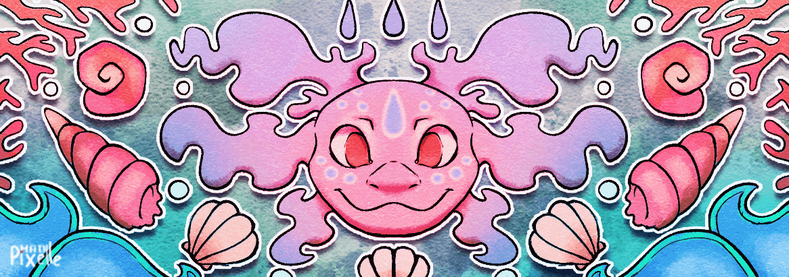
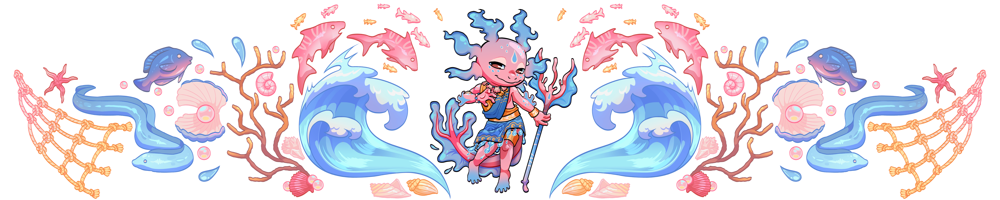
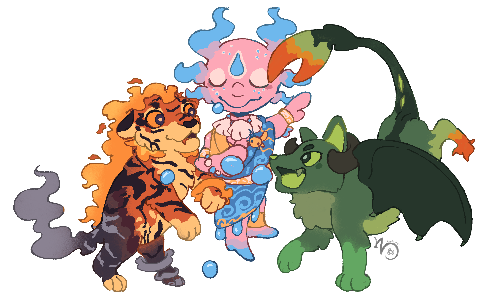

Made by MadPixelleAgeless | None
Solémé is a deity of the Félicie cult representing the ocean and the sea, the marine ecosystem, fishing, and storms. It is a deity perceived as fickle.
MAGIC
Solémé commands the sea and marine creatures. Solémé can summon storms or calm the waves, bring fish or ruin a harvest, shatter boats or guide them safely to port.
NOTES
- Solémé is a highly important deity in Chapelle d'Orée, the largest port city of Félicie, where many fishermen are established.
- When Solémé signifies an abundant catch, calm seas, and mercy, they are usually represented in a humanoid form.
- When the sky turns dark, waves rage, and sea monsters devour boats, their form is instead bestial.
- Solémé is connected to the number 3.
IDEAS
- Any symbolic representation is welcome.
- As a deity, people regularly represent Solémé in their everyday objects: a painted plate, an ornate chair back, a decorated boat sail...
ALLOWED DESIGN CHANGES
- Solémé is an idea more than a flesh-and-blood being, and their appearance may vary slightly depending on the region. You are therefore free to alter the design as long as you keep:
- The general shape remains an axolotl;
- If colored, keep the blue and pink palette;
- Certain elements must be present in groups of three.
Éternel | Aucune
Soléme est une divinité du culte de Félicie représentant l'océan et la mer, l'écosystème marin, la pêche et les tempêtes. C'est une divinité perçue comme capricieuse.
MAGIE
Solémé commande à la mer et aux êtres marins. Solémé peut faire jaillir des tempêtes ou calmer les vagues, apporter le poisson ou ruiner une pêche, briser les bateaux ou les mener à bon port.
NOTES
- Solémé est une divinité très importante à Chapelle d'Orée, plus grande ville portuaire de Félicie où de très nombreux pêcheurs sont établis.
- Lorsque Solémé signifie l'abondance de la pêche, la mer calme et sa clémence, on la représente plutôt sous forme humanoïde.
- Quand le ciel est sombre, que les vagues se déchaînent et que les monstres marins croquent les bateaux, sa forme est plutôt bestiale.
- Solémé est liée au chiffre 3.
IDÉES
- Toutes les représentations symboliques sont les bienvenues.
- En tant que divinité, les gens représentent régulièrement Solémé dans leurs objets du quotidien : une assiette peinte, un dossier de chaise orné, une voile de bateau décorée, ...
MODIFICATIONS AUTORISÉES
- Solémé est une idée plus qu'un être de chair, et son apparence peut légèrement varier selon les régions. Vous êtes donc libre de déformer le design à condition de garder :
- La forme générale reste un axolotl ;
- Si coloré, garder le bleu et le rose ;
- Certains éléments doivent être présents par trois.

Made by VelichorusPLUS D'INFORMATIONS

Made by VukkSolémé fait partie du trio des divinités primaires avec Hedychium et Lueur. On dit qu'elles ont bâti le monde et qu'elles continuent d'en régir les lois.
Très vénéré à Chapelle d'Orée en raison de la population importante de pêcheurs et du commerce maritime riche, Solémé est le second emblême de la ville, après le dragon protecteur fondateur de la ville. Une prière collective en son honneur a lieu tous les soirs de nouvelle lune dans les temples de la ville.
Solémé est associé au chiffre 3, notamment à travers ses trois branchies de chaque côté de la tête, sa queue qui se divise, représentant le fleuve qui se divise en affluent, et évidemment de son trident. Son trident est un trésor que les hommes ont parfois cherché à travers les océans. Il est dit qu'il permet à quiconque le possédant de contrôler les tempêtes.
Ainsi, il existe de nombreuses légendes et histoires qui se sont répandues à travers les siècles. La plus connue est sans doute celle du capitaine Ionnien parti de l'île de Kélymnos sur son fier navire et qui aurait fait le tour du continent à la recherche du trident. Il ne l'aurait jamais trouvé, mais il aurait largement participé à cartographier les côtes du continent. C'est lui qui aurait utilisé en premier les termes « Monde Cartographié » pour parler du continent et de ses archipels.
À sa mort, il aurait été enterré sur son île natale, face à l'océan, sous un trident en pierre.
À Chapelle d'Orée, il existe une tradition qui consiste à jéter trois poissons de sa pêche à l'océan lorsque celle-ci est particulièrement bonne, pour remercier la divinité. On dit que ceux qui ne le feraient pas verraient leur trois prochaines pêches être mauvaises.
 Made by hyteriem
Made by hyteriem
 Made by CrescentCaribou
Made by CrescentCaribou
Il existe une quantité non négligeable de légende à propos de monstres marins envoyées par Solémé pour détruire les navires dans ses mauvais jours. Sur les plages, peu de personne ose se baigner et l'océan est considéré comme un lieu dangereux. Très tôt, on raconte des histoires de naufrages ou de créatures des abysses qui déchirent les bâteaux aux plus jeunes.
Le monstre le plus terrible est sans doute la Tromos, une méduse géante aux filaments longs comme des pays et qui pourraient paralyser n'importe qui se trouvant dans l'eau. Selon la légende, Solémé l'enverrait lorsque les pêcheurs ne respecteraient pas les créatures marines ou pêcheraient plus que de raison.
Solémé appelle également les bancs de poissons et fait l'abandance des pêches. C'est donc une divinité ambivalente qu'il vaut mieux avoir de son côté. Dans les nombreuses représentations qui existent de Solémé, cette divinité est autant représentée comme un énorme monstre au milieu des typhons et de ciel apocalyptique que comme un humanoïde vêtu de façon coloré, échangeant volontiers avec les humains.
Il est à noter que Solémé ne régit pas les étendues d'eaux douces et leurs habitants. Ce domaine appartient à une autre divinité.
GALERIE


CREDIT
Hover over the images to see the artist's name and link.
Original design by Vukk.